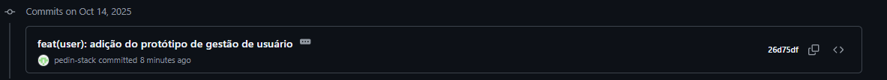

aperte aqui para voltar para o SandBox
Adicionei o que foi requisitado na atividade 08 nesse commit aqui da branch "sigecap":
Ao chegar no dashboard inicial clique no botão "user" para entrar na área de gestao de usuario
